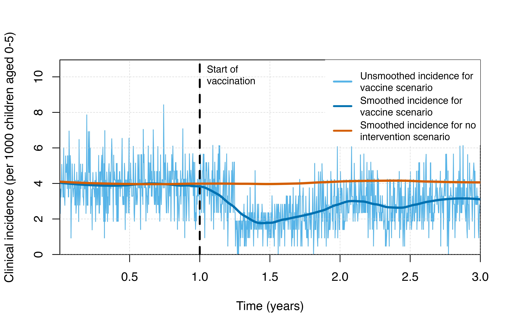
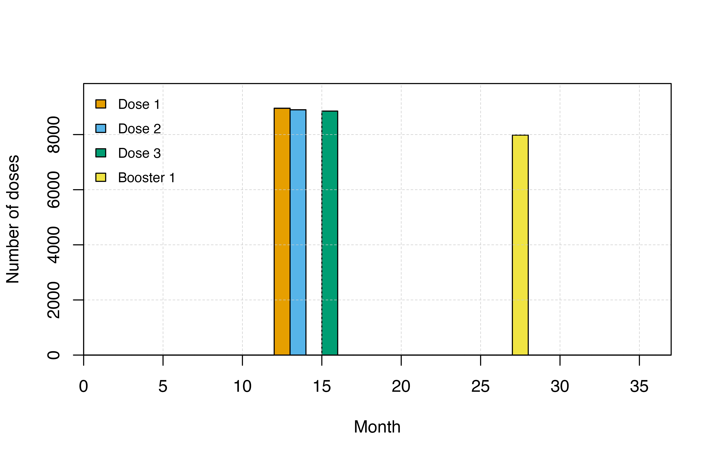

Vaccines
Vaccines.Rmd
suppressPackageStartupMessages(library(ggplot2))
library(malariasimulation)Parameterisation
We are going to set the default parameters to run the simulation from an equilibrium.
year <- 365
sim_length <- 3 * year
human_population <- 1000
starting_EIR <- 50
simparams <- get_parameters(list(
human_population = human_population,
model_seasonality = TRUE, # Let's try a bi-modal model
g0 = 0.28605,
g = c(0.20636, -0.0740318, -0.0009293),
h = c(0.173743, -0.0730962, -0.116019),
prevalence_rendering_min_ages = 0,
prevalence_rendering_max_ages = 18 * year,
incidence_rendering_min_ages = 0,
incidence_rendering_max_ages = 18 * year,
individual_mosquitoes = FALSE
)
)
simparams <- set_equilibrium(simparams, starting_EIR)
# Plotting functions
plot_prevalence <- function(output) {
ggplot(output) + geom_line(
aes(x = timestep, y = (n_inc_0_6570 / n_0_6570))) +
labs(x = "timestep", y = "incidence 0-18")
}
add_intervention_lines <- function(plot, events) {
plot + geom_vline(
data = events,
mapping = aes(xintercept=timestep),
color="blue"
) + geom_text(
data = events,
mapping = aes(x = timestep, y = 0, label = name),
size = 4,
angle = 90,
vjust = -0.4,
hjust = 0
)
}Then we can run the simulation for a variety of Vaccination strategies:
Mass RTS,S
This is a round of RTS,S vaccine for individuals between 5 - 17 months and a booster after 18 months; coverage of 80%; for 10 years:
rtssparams <- simparams
peak <- peak_season_offset(rtssparams)
month <- 30
# Add RTS,S strategy
rtssevents = data.frame(
timestep = c(1, 2) * year + peak - month, #vaccine efficacy kicks off a month before the peak
name=c("RTS,S 1", "RTS,S 2")
)
rtssparams <- set_mass_rtss(
rtssparams,
timesteps = rtssevents$timestep,
coverages = rep(0.8, 2),
min_wait = 2 * 365,
min_ages = 5 * month,
max_ages = 17 * year,
boosters = 18 * month,
booster_coverage = .7
)
output <- run_simulation(sim_length, rtssparams)
add_intervention_lines(plot_prevalence(output), rtssevents)
You can plot the distribution of doses using the n_rtss_mass_dose_* outputs:
plot_dosage <- function(output, strategy, doses, boosters) {
distributed <- NULL
label <- NULL
timestep <- NULL
for (dose in seq(doses)) {
distributed <- c(
distributed,
cumsum(output[[paste0('n_rtss_', strategy, '_dose_', dose)]])
)
label <- c(label, rep(paste0('dose ', dose), nrow(output)))
timestep <- c(timestep, output$timestep)
}
for (booster in seq(boosters)) {
distributed <- c(
distributed,
cumsum(output[[paste0('n_rtss_', strategy, '_booster_', booster)]])
)
label <- c(label, rep(paste0('booster ', booster), nrow(output)))
timestep <- c(timestep, output$timestep)
}
long_output <- data.frame(
distributed = distributed,
label = label,
timestep = timestep
)
ggplot(long_output) + geom_line(aes(x = timestep, y = distributed, group=label, color = label))
}
add_intervention_lines(plot_dosage(output, 'mass', 3, 1), rtssevents)
RTS,S EPI
You can opt for a more gradual dosing using the EPI strategy. Individuals will be vaccinated once they reach a certain age…
rtssepiparams <- simparams
# Add RTS,S strategy
rtssepievents = data.frame(
timestep = c(1, 2) * year,
name=c("RTS,S EPI start", "RTS,S EPI end")
)
rtssepiparams <- set_rtss_epi(
rtssepiparams,
start = rtssepievents$timestep[[1]],
end = rtssepievents$timestep[[2]],
age = 5 * month,
coverage = 0.8,
min_wait = 0,
boosters = 18 * month,
booster_coverage = .7
)
output <- run_simulation(sim_length, rtssepiparams)
add_intervention_lines(plot_dosage(output, 'epi', 3, 1), rtssepievents)
RTS,S seasonal boosters
We can set booster timesteps relative to the start of the year. This allows us to target seasonal dynamics
rtssepiseasonalparams <- simparams
# Add RTS,S seasonal strategy
rtssepiseasonalparams <- set_rtss_epi(
rtssepiseasonalparams,
start = rtssepievents$timestep[[1]],
end = rtssepievents$timestep[[2]],
age = 5 * month,
coverage = 0.8,
min_wait = 6 * month,
boosters = (peak - 3 * month) + c(0, year),
booster_coverage = rep(.7, 2),
seasonal_boosters = TRUE
)
output <- run_simulation(5 * year, rtssepiseasonalparams)
add_intervention_lines(plot_dosage(output, 'epi', 3, 2), rtssepievents)RTS,S dosing
You can try different dosing schedules using the rtss_doses parameter
rtssepiparams2 <- rtssepiparams
rtssepiparams2$rtss_doses <- c(0, 30, 60)
rtssepiparams2 <- set_rtss_epi(
rtssepiparams2,
start = rtssepievents$timestep[[1]],
end = rtssepievents$timestep[[2]],
age = 5 * month,
coverage = 0.8,
min_wait = 0,
boosters = c(12 * month, 18 * month, 24 * month),
booster_coverage = c(1, 1, 1)
)
output <- run_simulation(5 * year, rtssepiparams2)
add_intervention_lines(plot_dosage(output, 'epi', 3, 3), rtssepievents)
TBV
This is a round of the TBV (transmission blocking) vaccine at ages 1, 2, 3 and 18; coverage of 80%; for 10 years:
tbvparams <- simparams
# Add TBV strategy
tbvevents = data.frame(
timestep = c(1, 2) * 365,
name=c("TBV 1", "TBV 2")
)
tbvparams <- set_tbv(
tbvparams,
timesteps = tbvevents$timestep,
coverages = rep(0.9, 2),
ages = seq(18)
)
output <- run_simulation(sim_length, tbvparams)
add_intervention_lines(plot_prevalence(output), tbvevents)